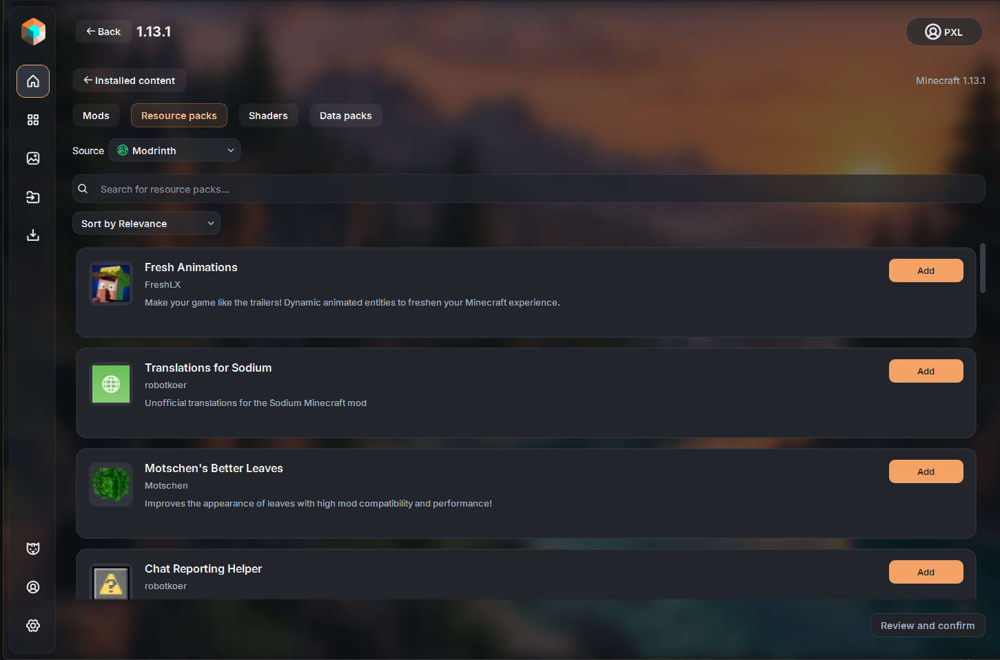
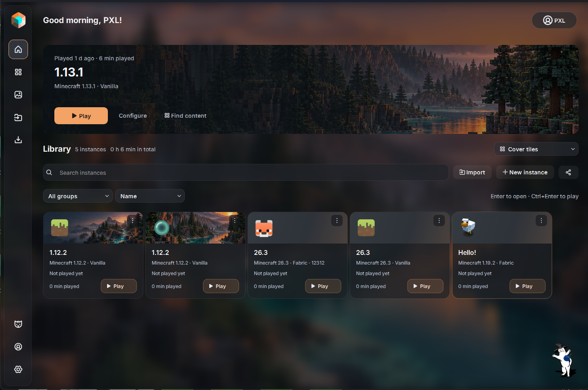

Дополнения
Моды — рядом с игрой.
Ищите моды, ресурспаки и шейдеры для выбранной сборки. Перед установкой — понятный список дополнений и зависимостей.

Сборки, моды и любимые миры в одном лаунчере. С вашим оформлением и без лишних окон.
Проверяем доступные версии…
Другая система или Portable
Дополнения
Ищите моды, ресурспаки и шейдеры для выбранной сборки. Перед установкой — понятный список дополнений и зависимостей.

PXL Cone Launcher
Первая публичная альфа ещё готовится. Здесь появятся загрузки для Windows и Linux. Перед тестированием сохраните копии важных миров.
При первом запуске лаунчер поможет выбрать язык, добавить аккаунт и настроить Java.
Проверяем доступные версии…